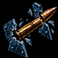
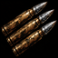

ANIM-S49 · 109 / DI01-A01 · 110 / DI02-A01 · Deux animations à valider · Cases de 64 px.
Chargement…

109 · Tir perforant
Un projectile tendu traverse les cibles alignées, avec des impacts successifs. Le mur arrête le tir à sa surface. La scène montre jusqu’à quatre cibles touchées, avec moins de dégâts après chaque traversée ; un allié placé sur la ligne peut être blessé.

110 · Feu nourri
Deux séquences rapides sur la même cible, avec un recul bref à chaque départ. En coup par coup : deux projectiles. Avec le mode rafale de trois : six projectiles. Les ennemis voisins ne sont pas visés.
La prévisualisation clignote avant le lancement puis disparaît dès la confirmation. Les tirs et impacts sont brefs. Les blessures physiques reprennent le sang validé et le petit mouvement d’aller-retour ; les machines produisent des étincelles, sans sang.
Les dégâts et les échecs sont préparés pour comparer les animations, sans nouveaux jets aléatoires. Les cibles possèdent 240 PV d’exemple pour rester en vie. L’attente ne déclenche aucun tir supplémentaire. Les boutons de tours servent à observer la recharge ; ils ne relancent pas la compétence.
Le laboratoire natif propose le même lot avec --apercu-laboratoire-competences --lot-tirs-ouverture. Les monstres gardent provisoirement leurs dessins actuels ; leur adaptation reste prévue après les animations. Cette revue n’intègre pas encore les effets à la campagne.